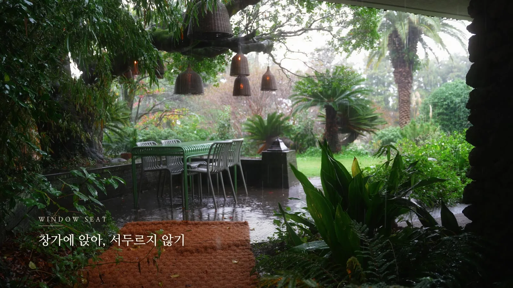
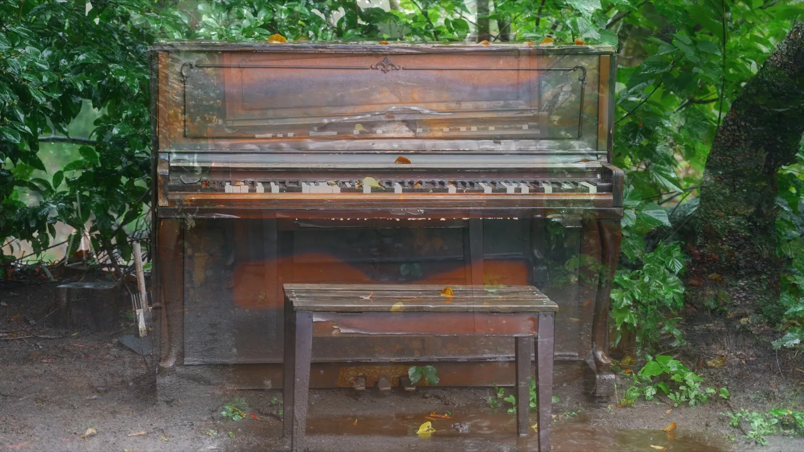

제주 서귀포 중문 · 비 오는 날
비가 내리는 날, 제주 서귀포 중문별장에서 보낸 느린 오후. 젖은 잔디와 현무암 돌담, 처마 끝의 낙수, 낡은 피아노와 라탄 조명, 그리고 통창 너머의 비멍 — 서두를 필요 없는 하루를 빗소리와 함께 담았습니다.
LONG FILM
3분 52초 · 빗소리와 함께 네 개의 장으로 엮었습니다.
SHORTS
정원비가 내리면, 제주의 시간은 천천히 흐릅니다
빗방울비가 오면 비로소 짙어지는 제주의 색
피아노·라탄 조명낡은 피아노 위로 비가 연주하는 시간
통창 비멍통창 밖엔 비, 서두를 필요 없는 날
내리는 비소리로 먼저 오는 제주의 비

PLACE
제주 서귀포 중문, 현무암 돌담과 너른 정원을 둔 곳입니다. 비가 오면 젖은 잔디와 처마 끝 낙수, 통창 너머 빗소리가 공간을 천천히 채웁니다.
제주특별자치도 서귀포시 천제연로 337